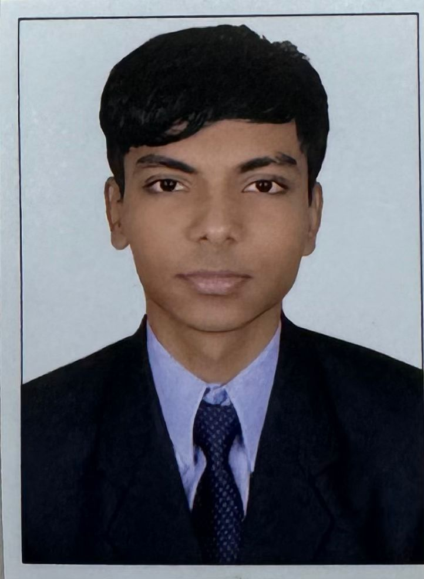

Mohammad Khalid Siddiqui

GENERAL INFO:
I am a software engineer specialized in webpage development, back-end development, and front-end design. I am currently looking for a full-time role to advance my skills. I constantly aim to exceed expectations with every project and keep abreast of the latest technological advancements. I am enthusiastic about the opportunity to join a team where I can further develop and apply my expertise. If you need a dedicated and talented software engineer, I would be eager to discuss how my background and enthusiasm can support your projects and objectives.
Education:
- Degree (B.Tech) in ECS (Electronics and Computer Science) - Shah and Anchor Kutchhi Engineering College, Mumbai. (2022-2025)
- Diploma in Computer Engineering -
Thakur Polytechnic, Mumbai. (2019-2022)
Experience:
- Internships
Prodigy InfoTech
From 01-Jul-24 To 31-Jul-24
- Roles and Responsibilities:
- During this period, I demonstrated exceptional skills by developing 4 web development projects using HTML, CSS and JavaScript earning outstanding remarks from the company.
Rely Service Pvt. Ltd.
From 20-Apr-20 To 16-May-20
- Roles and Responsibilities:
- Install necessary software tools
- Establish a Git repository and clustered database for team members to access a shared program code and database
- Code the layout and Java project in a .xml format using Android Studio
- Execute the code on an emulator using the emulator
- Project Name: Android App Development
- Description: Android software development involves creating applications for devices operating on the Android system. Google mentions that Android apps can be coded in Kotlin, Java, and C++ languages using the Android software development kit (SDK), with the option to use other languages as well.
Technical Skills:
- Programming languages: Java, Python, C/ C++, JavaScript
- Databases: MySQL
- Operating Systems: Windows, Linux Hardware: VLSI Design
Certifications:
- Cisco “Data Analytics Essentials”
- Udemy “JavaScript Course 2025 by Jonas Schemdtmann
Other:
© Khalid Siddiqui. All rights reserved.